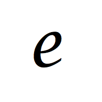

LE NOUVEAU R
Un matériau d’isolation qui s’adapte intuitivement. Sur papier, le coefficient de conductivité thermique (facteur R) du chanvre est de 0,085. Ce qui rend le chanvre si exceptionnel et distinct de tous les autres matériaux d’isolation est toutefois son caractère vivant. C’est ce qu’on définit par le nouveau R. En effet, de nombreuses études instrumentées ont démontré que le béton de chanvre permet de régulariser le climat intérieur. On affirme que les variations de températures dans les murs en béton de chanvre sont non linéaires (contrairement à tous les autres matériaux d’isolation). On explique cela au phénomène de changement de phase de l’eau qui s’effectue à l’intérieur même des murs. C’est un procédé relativement simple à comprendre. Le mur de chanvre s’adapte intuitivement si la température extérieure descend ou augmente,. Il va retenir l’eau et donc l’humidité qui se trouve dans l’air (phénomène exothermique de condensation) ou bien relâcher celle-ci et par conséquent effectuer un phénomène endothermique de vaporisation. On peut en conclure que le caractère vivant du béton de chanvre lui permet de s’adapter et de réagir aux fluctuations de température extérieure. Il en résulte donc de très fortes économies sur vos factures de chauffage en hiver en plus de vous libérer de la présence d’un climatiseur en été !
CONTRÔLE DE L’HUMIDITÉ
Il accumule la chaleur du soleil dans le jour pour la libérer la nuit. En raison du phénomène de changement de phase de l’eau décrit dans le nouveau r, les maisons en chanvres fournissent à leurs occupants un confort inégalé. L’humidité relative y est régulée de sorte qu’on ressent une légèreté dans l’air ambiant. Ceux qui bénéficient d’une maison en chanvre n’utilisent évidemment pas de déshumidificateur bruyant et encombrant dans leur demeure !
RÉSISTENT AUX RONGEURS
Les nombreux propriétaires en sont témoins; les maisons en chanvre sont à l’abri des attaques de rongeurs. Le béton de chanvre, composé de chanvre (évidemment) et de la chaux (liant), offre une résistance bactérienne et fongique naturelle. La chaux vient cristalliser le chanvre pour former un état de pierre calcaire qui garantit par ailleurs un gage de durabilité incomparable à votre maison. C’est en raison de cette composition que les rongeurs et insectes ne s'attaqueront pas à votre demeure. On peut dire adieu à l’élaboration d’une multitude de stratégies visant à attraper ces vilains rongeurs !
ININFLAMMABLE
Le béton de chanvre ne prendra jamais en feu. Croyez-le ou non, il en demeure que le mur de béton de chanvre enduit a été classé dans la catégorie française M0 qui signifie incombustible. Ayez la paix d’esprit dans votre maison, votre entreprise ou même votre entrepôt en chanvre !

CONTRIBUTION ÉCOLOGIQUE
Les maisons en chanvre sont des soldats de l’environnement. Non seulement le chanvre est un matériaux plus efficace pour répondre à nos besoins, mais il constitue également un choix respectueux pour notre environnement. Sur un premier plan, une maison en chanvre de dimension régulière absorbera jusqu’à 20 tonnes de CO2 dans son existence. De plus, la culture du chanvre est extrêmement saine. Elle ne requiert d’abord que très peu de ressources naturelles et aucun produit phytosanitaire (produits chimiques appliqués sur les plantes pour prévenir ou guérir les maladies dans les organismes végétaux, communément appelés pesticides ou herbicides). Finalement, c'est aussi une culture qui est reconnue pour sa facilité d’entretien en plus de régénérer les sols. Décidément, la maison de chanvre a tout pour elle !

ÉLASTICITÉ
Le béton de chanvre s’auto-répare en cas de micro fracture. Son module d'élasticité est 20 fois supérieur à celui du béton armé. En raison de sa stabilité sismique, le béton de chanvre est considéré par plusieurs revues et ouvrages comme le remède miracle dans les endroits à risque de secousse terrestre.
PARTICULES ORGANIQUES VOLATILES
Une maison en chanvre vous procure une aire pure et filtrée. Le béton de chanvre ne dégage aucune toxicité ni particule organiques volatiles (POV) dans l’air.